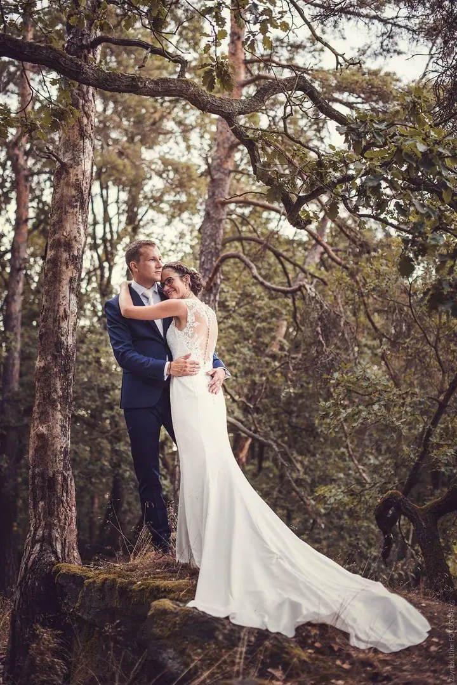

Svatby
Fotím svatby v uvolněném stylu, nic strojeného. Mám různé cenové balíčky a jezdím po celé České republice.

Jmenuji se Zbyněk Uher a nejradši fotím lidi: svatby, portréty i rodiny u nich doma. Nejčastěji mě potkáte v Brandýse nad Labem, v Praze a na jižní Moravě v Lanžhotě, fo…
Rezervovat termínFotím od roku 2006. Tenkrát jsem si za brigádu na lodi koupil první fotoaparát a od té doby mě to nepustilo. Prošel jsem různými druhy fotografie, ale nakonec jsem zůstal hlavně u lidí: u portrétů, lifestylu a svateb.


Do fotek se snažím otisknout emoce, pocity a jedinečný okamžik. Nemám jeden vyhrazený žánr, fotím to, co mě zrovna zaujme, a rád zkouším nové věci. Baví mě cestování a street foto i vlastní fotografické představy, které pak dotvářím v počítači.
Nejsem ale jen fotograf. Jsem manžel, táta dvou dětí a snílek s hlavou často v oblacích. Bydlím v Brandýse nad Labem, pocházím z Lanžhota na jižní Moravě a na svatby za vámi rád přijedu kamkoli v republice.
Co fotím
Fotím svatby v uvolněném stylu, nic strojeného. Mám různé cenové balíčky a jezdím po celé České republice.
Hodina focení venku a 10 upravených fotografií v plném rozlišení. Fotky si sami vyberete v zaheslované galerii.
Rodinu a děti fotím venku, nebo přijedu přímo k vám domů na hodinu a půl lifestylového focení.
Půlhodinové focení s vaším zvířetem a 5 upravených fotografií. Fotím od křečka až po slona.
Fotografie jsou ilustrační
Postup
Ozvěte se e-mailem nebo zavolejte. U svatby vám pošlu ceník s balíčky, u ostatních focení se rovnou domluvíme na termínu.
Probereme, kde a jak budeme fotit, ať už venku, u vás doma, nebo na místě vaší svatby.
Fotím v uvolněném stylu, bez strojených póz. Stačí být sami sebou a užít si to.
U portrétů si fotky vyberete v zaheslované galerii. Upravené fotografie v plném rozlišení vám pak pošlu elektronicky.
Otázky
Na svatby mám různé cenové balíčky a ceník posílám na vyžádání. Stačí napsat na zbynekuher@seznam.cz.
Portrét v exteriéru stojí podle ceníku 3 000 Kč. Zahrnuje hodinu focení a 10 upravených fotografií v plném rozlišení.
Ano, fotím po celé České republice. U lifestylového focení počítám dopravu mimo Brandýs a blízké okolí 7 Kč za kilometr.
Určitě. Focení se zvířecím kámošem trvá 30 minut a dostanete 5 upravených fotografií. Fotím od křečka až po slona.